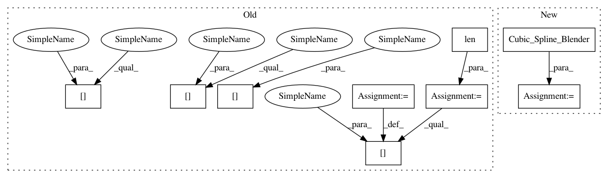

6fe02cae14d9574a15dea08640cf4e8db029c4d6,trunk/SUAVE/Methods/Aerodynamics/Supersonic_Zero/Drag/parasite_drag_propulsor.py,,parasite_drag_propulsor,#Any#Any#Any#,21
Before Change
cf_prop, k_comp, k_reyn = compressible_turbulent_flat_plate(Re_prop,Mc,Tc)
k_prop = np.array([[0.0]]*len(Mc))
// assume that the drag divergence mach number of the propulsor matches the main wing
Mdiv = state.conditions.aerodynamics.drag_breakdown.compressible.main_wing.divergence_mach
// form factor according to Raymer equation (pg 283 of Aircraft Design: A Conceptual Approach)
k_prop_sub = 1. + 0.35 / (float(l_prop)/float(d_prop))
// for supersonic flow (http://adg.stanford.edu/aa241/drag/BODYFORMFACTOR.HTML)
k_prop_sup = 1.
sb_mask = (Mc <= Mdiv)
tn_mask = ((Mc > Mdiv) & (Mc < 1.05))
sp_mask = (Mc >= 1.05)
k_prop[sb_mask] = k_prop_sub
// basic interpolation for transonic
k_prop[tn_mask] = (k_prop_sup-k_prop_sub)*(Mc[tn_mask]-Mdiv[tn_mask])/(1.05-Mdiv[tn_mask]) + k_prop_sub
k_prop[sp_mask] = k_prop_sup
// --------------------------------------------------------
// find the final result
After Change
// for supersonic flow (http://adg.stanford.edu/aa241/drag/BODYFORMFACTOR.HTML)
k_prop_sup = 1.
trans_spline = Cubic_Spline_Blender(low_mach_cutoff,high_mach_cutoff)
h00 = lambda M:trans_spline.compute(M)
k_prop = k_prop_sub*(h00(Mc)) + k_prop_sup*(1-h00(Mc))
In pattern: SUPERPATTERN
Frequency: 3
Non-data size: 9
Instances
Project Name: suavecode/SUAVE
Commit Name: 6fe02cae14d9574a15dea08640cf4e8db029c4d6
Time: 2019-04-07
Author: timdmacdo@gmail.com
File Name: trunk/SUAVE/Methods/Aerodynamics/Supersonic_Zero/Drag/parasite_drag_propulsor.py
Class Name:
Method Name: parasite_drag_propulsor
Project Name: suavecode/SUAVE
Commit Name: 13b86a857c1e9fb716c75c51646eaec5829b945d
Time: 2020-01-19
Author: timdmacdo@gmail.com
File Name: trunk/SUAVE/Components/Energy/Networks/Propulsor_Surrogate.py
Class Name: Propulsor_Surrogate
Method Name: evaluate_thrust
Project Name: suavecode/SUAVE
Commit Name: a482f9a6ce01bccb75413cd1ff212ccf047dd614
Time: 2020-01-31
Author: mclarke2@stanford.edu
File Name: trunk/SUAVE/Components/Energy/Networks/Propulsor_Surrogate.py
Class Name: Propulsor_Surrogate
Method Name: evaluate_thrust